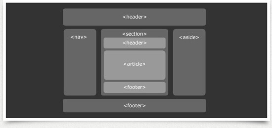
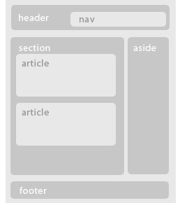

semantic tag란? 태그의 의미와 알맞게 내용을 구성해야 한다.
- header : 사이트 전체의 헤더, article태그의 헤더
- nav : 네비게이션 표현, header하위/aside하위/footer하위
- article : 본문내용, 독립적으로 표현 가능한 단위
- section : 연관된 컨텐츠를 그룹핑 하는 용도. article하위, 여러 article을 묶는 용도



semantic tag란? 태그의 의미와 알맞게 내용을 구성해야 한다.